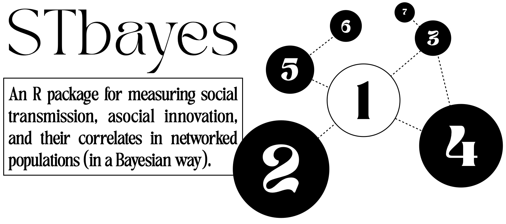

STbayes (SocialTransmissionbayes[ian]) is a package for building and running Bayesian inferential models of social transmission across static or dynamic networks. Users may supply their own data in formats given below, or import nbdaData objects directly from the NBDA package.
STbayes can currently accomodate: - cTADA (acquisition time known) and OADA (only acquisition order known) model types. - static and dynamic networks. - multi-network comparison (with static or dynamic networks). - multiple trials with the same set, subsets, or different sets of individuals. - constant and time-varying ILVs for additive and multiplicative transmission models. - varying effects by individual for strength of social transmission, baseline hazard rates, and other user defined ILVs. - Easy workflow for ELPD (loo-psis, waic) model comparison. - propagation of uncertainty from network measures to transmission model - modeling of complex transmission and contagion
This package is under development and is not guaranteed to work.
Table of contents:
- Installation
- Examples
- Recover parameter values from simulated data
- Compare full and asocial models
- Import your own data
- Varying effects by individual
- Import data from NBDA object
- Use posterior distribution of edge weights from bayesian network model
- Modeling complex contagion/transmission - frequency dependent rules
Installation
The functions of this package depend on cmdstanr, posterior, bayestestR, data.table and loo. You can install cmdstanr by following these instructions.
Vignettes use packages NBDA (install with devtools::install_github("whoppitt/NBDA"), igraph, dplyr, ggplot2, and ggpubr.
To install the development version of STbayes:
# install devtools if not already
if (!require("devtools")) install.packages("devtools")
devtools::install_github("michaelchimento/STbayes")Examples
Recover parameter values from simulated data
An example dataset is provided where data was simulated on a random-regular network where k=4, s=5 and the base rate was set to 0.001. You can run your own simulation in the simulate_data.R vignette.
library(STbayes)
event_data = STbayes::event_data
edge_list = STbayes::edge_list
# import_user_STb formats your data for further steps
data_list_user = import_user_STb(event_data, edge_list)
#generate STAN model from input data
model_obj = generate_STb_model(data_list_user, gq=T, est_acqTime = T)
# fit model
fit = fit_STb(data_list_user, model_obj, chains = 5, cores = 5, parallel_chains=5, iter=2000)
# check estimates
STb_summary(fit, digits=3)STb_summary outputs a formatted table of key values for parameters (incl back-transformation of variables fitted on the log scale).
Parameter Median MAD CI_Lower CI_Upper ess_bulk ess_tail Rhat
1 log_lambda_0_mean -6.894 0.448 -7.832 -6.065 2623.409 2429.397 1.002
2 log_s_prime_mean -5.366 0.170 -5.730 -5.041 2910.030 2599.204 1.002
3 lambda_0 0.001 0.000 0.000 0.002 2623.412 2429.397 1.002
4 s 4.610 2.348 1.103 11.798 2339.627 2555.383 1.003
5 percent_ST[1] 0.819 0.046 0.716 0.896 2339.627 2555.383 1.003Estimates are not far off from the parameter values used for simulation, but depend on network density and stochastic processes of each simulation. See vignette simulate_data_manytimes.R to quench your thirst for model validation.
Compare full and asocial models
Like NBDA, we can compare a full model with both a social and asocial component, to a model restricted to estimating only an asocial rate. We can compare models using either LOO-PSIS or WAIC with STb_compare (really a convenient wrapper that automates a workflow using package loo) and compare the estimated learning times from both models. First let’s load and fit both models with a convenience function.
library(STbayes)
library(ggplot2)
event_data = STbayes::event_data
edge_list = STbayes::edge_list
# format data
data_list_user = import_user_STb(event_data, edge_list)
# reusable function to generate and fit a model
generate_and_fit_model <- function(data, model_type, chains = 5, cores = 5, parallel_chains=5, iter = 2000) {
model = generate_STb_model(data, model_type=model_type, est_acqTime = TRUE)
fit = fit_STb(data, model, chains, cores, iter, control)
return(fit)
}
# generate, fit, and summarize models
full_fit = generate_and_fit_model(data_list_user, "full")
asocial_fit = generate_and_fit_model(data_list_user, "asocial")
#check estimates
STb_summary(full_fit, digits = 4)
STb_summary(asocial_fit, digits = 4)We can extract the LOOIC and add them to our plots of the estimated times:
# extract WAIC and labels
loo_output = STb_compare(full_fit, asocial_fit, method="loo-psis")
looic_full <- loo_output$loo_objects$full_fit$estimates["looic",]
looic_asocial <- loo_output$loo_objects$asocial_fit$estimates["looic",]
label_full = paste0("LOO-PSIS=", round(looic_full["Estimate"]), "+/-", round(looic_full["SE"]))
label_null = paste0("LOO-PSIS=", round(looic_asocial["Estimate"]), "+/-", round(looic_asocial["SE"]))
# reusable function for plotting
plot_acq_time <- function(fit, data, title, label) {
acqdata = extract_acqTime(fit, data)
p = ggplot(acqdata, aes(x = observed_time, y = mean_time)) +
annotate("text", x = 100, y = 350, label = label) +
geom_segment(
aes(x = observed_time, xend = observed_time, y = mean_time, yend = observed_time),
color = "red",
alpha = 0.2
) +
geom_point(alpha = 0.6, size = 2) +
geom_abline(intercept = 0, slope = 1, color = "black", linetype = "dashed") +
labs(
title = title,
x = "Observed time",
y = "Estimated time"
) +
theme_minimal()
return(p)
}
# plot estimated times
p1 = plot_acq_time(asocial_fit, data_list_user, "Asocial (null) model estimates", label_null)
p2 = plot_acq_time(full_fit, data_list_user, "Full model estimates", label_full)The full model describes the data much better and obtains a better (lower) LOO-PSIS score. Estimated learning times are the point estimate (mean in this case) from posterior distribution of learning times, and since individuals learn in random orders in the asocial model according to a static rate, the average time of each learner cluster around a similar time. Meanwhile, including time-varying social information allows for a better prediction of when individuals have acquired the behavior.
Import your own data
If you’d prefer to import your own data, STbayes requires two dataframes, and accept an optional third dataframe of individual-level variables. The first dataframe gives information about the spreading of the behavior or information and must contain columns: - id: Character or numeric (all converted to numeric, anyway) column of individual identites. - trial: Character or numeric column indicating which trial the event belongs to. If there is only one trial, set all values to 1. - time: This is an integer or float column indicating when the individual was recorded as first informed/knowledgable. If an ID was a pretrained demonstrator, or otherwise became informed prior to the start of the observation period, set as 0. Left censored individuals will not contribute to the likelihood calculation. If an individual never learned during the observation period, set its value to the duration of the observation period. These will be treated as right-censored individuals in the likelihood calculation. - t_end: this is the duration of the observation period for each trial. If you observed a population for 7 days, t_end=7.
The second dataframe gives information regarding the network connections of each individual in a long format (i.e. an edge list). The edge list can be symmetric (all combinations of individuals provided, useful for directed networks) or asymmetric. The first three columns must be: - trial: Character or numeric column indicating which trial the networks belong to. If there is only one diffusion, set all values to 1. - from: Character or numeric column of individual identites. - to: Character or numeric column of individual identites.
Optionally, the user may supply dynamic networks if time is measured with integer values. At the moment, the user must organize the data so that each discrete timestep is represented in this dataframe. For example, if your observation period was 7 days, you should supply a network to be used for each day. If the network is a static representation to be used for the entire diffusion, this column is not required. - time: This is an integer column indicating which time step the networks belong to.
Finally, the user must supply at least one descriptively named column of integer or float edge weights. The column names will be carried forward in naming variables in the output of the model. In the example code below, I have provided a binary kin network and an inverse distance network (higher values = closer together). - network_name1: a column of integer or float edge weights - network_name2: another column of integer or float edge weights - etc…
library(STbayes)
event_data <- data.frame(
id = c("A", "B", "C", "D", "E", "F"), #this can be character or numeric
trial = c(1, 1, 1, 2, 2, 2), #this can be character or numeric
time = c(0, 1, 2, 0, 1, 4), #this must be numeric, integer or float. If time=0, left-censored, if time>t_end, right-censored
t_end = c(3, 3, 3, 4, 4, 4) #this is the duration of the observation period.
)
networks <- data.frame(
trial = c(1, 1, 1, 2, 2, 2), #this can be character or numeric
from = c("A", "A", "B", "D", "D", "E"), #this can be character or numeric
to = c("B", "C", "C", "E", "F", "F"), #this can be character or numeric
kin = c(1, 0, 1, 0, 1, 1), # first network
inverse_distance = c(0, 1, .5, .25, .1, 0) #second network
)
# optional dataframe of constant individual-level variables
ILV_c <- data.frame(
id = c("A", "B", "C", "D", "E", "F"),
age = c(2, 3, 4, 2, 5, 6),
sex = c(0, 1, 1, 0, 1, 0), # Factor ILVs must be input as numeric
weight = c(0.5, .25, .3, 0, -.2, -.4)
)
# optional dataframe of time-varying individual level variables
ILV_tv <- data.frame(
trial = c(rep(1, each = 9),rep(2, each = 9)),
id = c(rep(LETTERS[1:3], each=3), rep(LETTERS[4:6], each=3)),
# these times correspond to the inter-acquisition periods
#e.g. 1 is from [t_0 to t_1), 2 is [t_1 to t_2), 3 = [t_2 to t_3 or t_end] if censored inds. present)
time = c(rep(1:3, times = 3), rep(1:3, times=3)),
#ensure the variable is summarizing these inter-acquisition time periods
dist_from_resource = rnorm(18)
)
data_list <- import_user_STb(
event_data = event_data,
networks = networks,
ILV_c = ILV_c,
ILV_tv = ILV_tv,
ILVi = c("age", "dist_from_resource"), # estimate effects of constant ILV 'age' and time-varying ILV 'dist_from_resource' on asocial learning rates
ILVs = c("sex"), # Use only 'sex' for social learning
ILVm = c("weight") # Use weight for multiplicative effect on asocial and social learning
)
#create the STAN code for the model
model_obj = generate_STb_model(data_list)
#Obviously this model will not fit, feed it real data in the format above, or simulate data from the vignette
fit = fit_STb(data_list, model_obj, chains = 5, cores = 5, parallel_chains=5, iter=2000, control = list(adapt_delta=0.99) )
# You can see a nice summary of the fit here.
# parameters are fit on the log scale, but transformations are included in the output
STb_summary(fit, depth=2)If fitting a multinetwork model, network weights will be in the w parameter vector, and you must include depth=2 in the call to STb_summary to see them.
Varying effects by individual
You may apply varying effects for each individual for the baseline rate (lambda_0), the strength of social learning (s) and any of the ILVs. You do this by specifying specific parameter names using the argument veff_ID in the call to generate_STb_model() or generate_STb_asocial_model:
model = generate_STb_model(data_list, veff_ID = c("lambda_0", "s"))This can be used if you have multiple trials with the same individuals, and you expect there are consistent individual differences in effects. For lambda_0 and s, varying effects are added onto the main effect prior to transformation from log scale back to linear. For example, if we apply a varying effect for lambda_0, the model will calculate a vector of lambda_0 values for each individual in the transformed parameters block:
and use those values when calculating the likelihood in the model block. If you specify varying effects and the models have convergence issues, you probably do not have enough data to meaningfully estimate these. For a worked example please see the advanced recipes vignette.
Import data from NBDA object
Create and fit model from NBDA object (taken from Tutorial 4.1 from Hasenjager et al. 2021). Also see vignette “import_from_nbda_obj.R”.
library(STbayes)
#load example NBDAdata object
nbdaData_cTADA <- STbayes::tutorial4_1
#import into STbayes
data_list = import_NBDA_STb(nbdaData_cTADA)
#generate STAN model from input data
model_obj = generate_STb_model(data_list)
#fit model
fit = fit_STb(data_list, model_obj, chains = 5, cores = 5, parallel_chains=5, iter=2000)
STb_summary(fit, depth=2)
#Fit cTADA model using NBDA tadaFit
library(NBDA)
model_constant<-NBDA::tadaFit(nbdaData_cTADA)
data.frame(Variable=model_constant@varNames,MLE=model_constant@outputPar,SE=model_constant@se)
#check summary ~ the same as STbayes estimates. the priors on STbayes could be adjusted to be less skeptical of the large s valueUse posterior distribution of edge weights from bayesian network model
Rather than using point estimates for edge weights, it is possible to import posterior distributions of edge weights from bayesian network models, such as those fit by the bisonr package or the STRAND package. This is done by providing single fits (or a list of fits) to import_user_STb():
library(STbayes)
# load example bisonr fit object
bisonr_fit = STbayes::bisonr_fit
#network has 10 individuals, create mock event data
event_data <- data.frame(
trial = 1,
id = c(1:10),
time = sample(1:101, 10, replace = FALSE),
t_end = 100
)
#create data_list as usual
data_list = import_user_STb(event_data, networks=bisonr_fit)
# STb detects that you've entered posterior distributions as edgeweights automatically and creates the appropriate model
model = generate_STb_model(data_list)
#the fit will be garbage because it's made up, but works
fit = fit_STb(data_list, model, chains = 5, cores = 5, parallel_chains=5, iter=2000, control = list(adapt_delta=0.99))
STb_summary(fit)Modeling complex contagion/transmission - frequency dependent rules
STbayes can be used to fit and create models of complex transmission. As an example, you can create a log-likelihood that includes a frequency-dependent transmission rule by using the transmission_func argument of generate_STb_model:
data_list = import_user_STb(STbayes::event_data, STbayes::networks)
generate_STb_model(data_list, transmission_func="freqdep_f")The package defaults to the model of frequency-dependent bias as:
But also includes an alternative parameterization based on a scaled version of Dino Dini’s normalized tunable sigmoid function. In the first case, f<1 would be evidence of an anti-conformist transmission bias, f=1 would be proportional, and f>1 would be conformist. In the second case, the shape parameter k < 0 is conformist, k=0 proportional, and k>0 anti-conformist. Both parameterizations create a relationship betwen the proportion of neighbors that are knowledgable and the weight of that information on the rate of an event happening for a given individual:

You might find that one or the other has convergence issues, so we provide both. Complex transmission can be implemented with varying effects, ilvs, oada and ctada type models, etc.